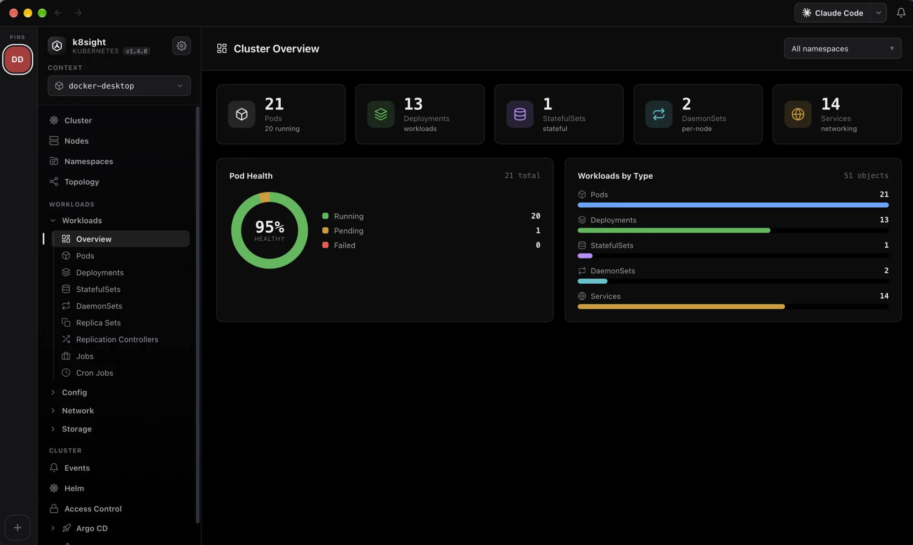
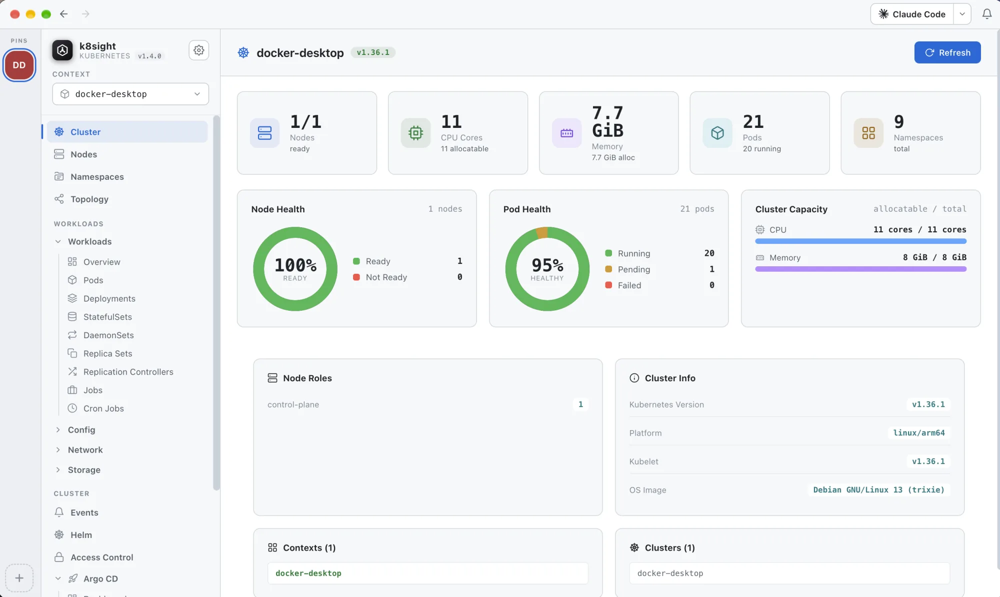
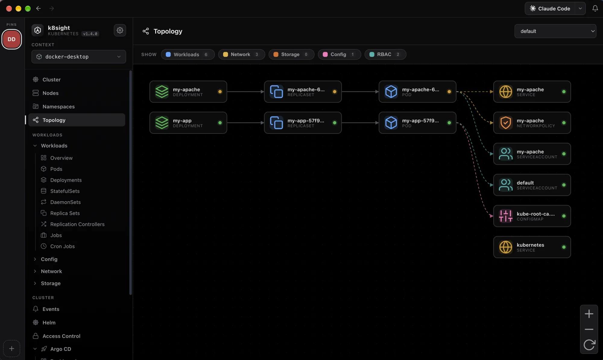
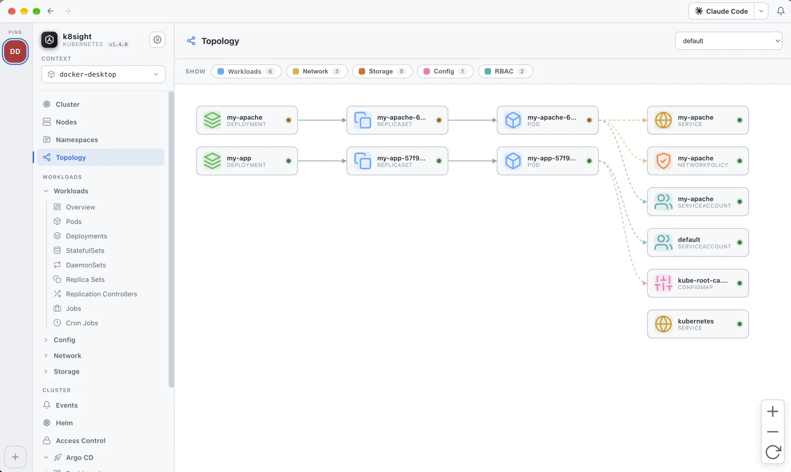
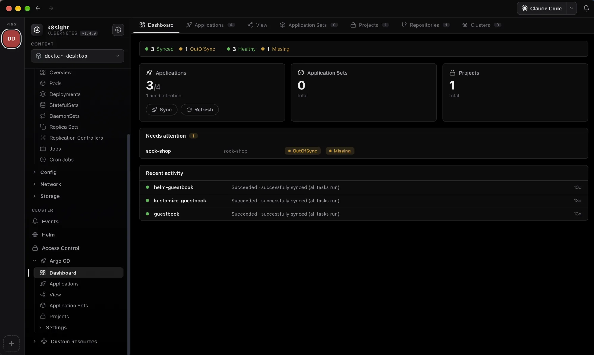
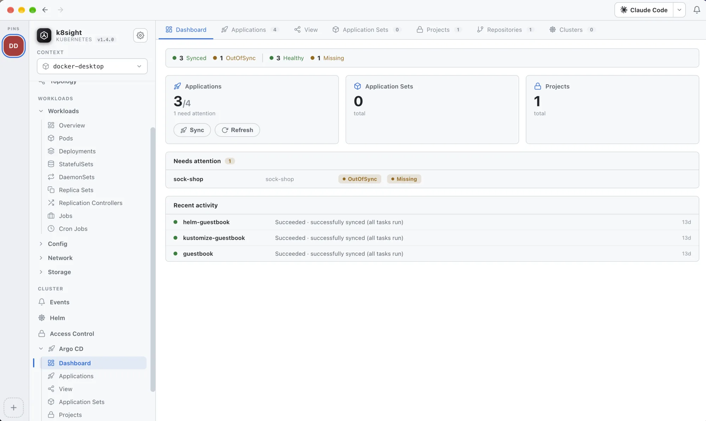
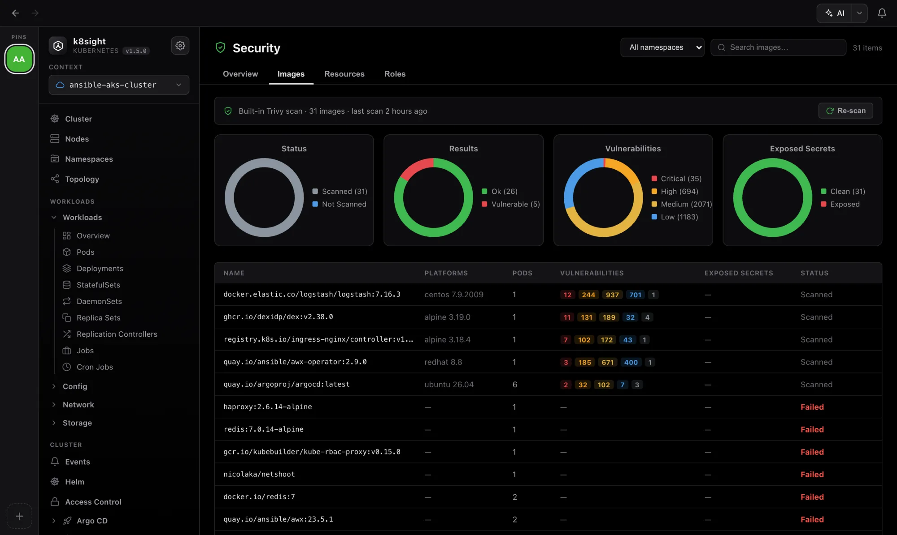
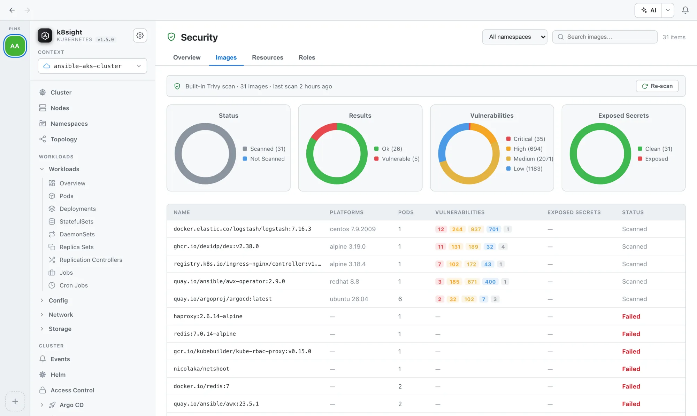

See your whole cluster in one beautiful window
A native desktop app for every cluster in your kubeconfig: live metrics, logs, shells, topology, Helm, Argo CD and costs.
Free & open-source · macOS .dmg · Windows .exe · Linux .AppImage / .deb


Everything your cluster needs, in one app
Pick a feature to see what it does. Every one of them works on any cluster in your kubeconfig, and all of them work in the built-in demo.


Dashboard, logs, shell & topology
Every workload type with live metrics, a pro log viewer, a real pod shell, topology, Helm and port forwarding.
Learn more

AI assistant & coding agents
Ask about your cluster in plain English with a read-only assistant, and dock your own coding agents beside it.
Learn moreEKS, AKS & GKE, no CLI
Discover cloud clusters across accounts, subscriptions and projects, and merge them into your kubeconfig.
Learn more

First-class Argo CD
Sync and health for every Application, resource trees and history, with sync, refresh and prune built in.
Learn more

Security Center
Image CVEs, config audits, RBAC checks and exposed secrets, from Trivy Operator or the bundled Trivy.
Learn more

Costs by namespace
Totals, idle cost and cost over time from OpenCost or Kubecost, down to each workload and node.
Learn moreSee k8sight in action
Short walkthroughs of the app and its features. Videos play from YouTube when you press play.
Download k8sight
Native installers for every desktop. Pick your platform; each build serves the same UI on top of your kubeconfig.
macOS
A native k8sight.app that starts the server and opens the UI in its own window, with your shell PATH repaired automatically.
- Open the
.dmgand drag k8sight to Applications. - Signed & notarized, so it opens without a security prompt.
- Keeps itself up to date after that.
- Requires
kubectlinstalled locally.
Windows
A standard per-user installer with a Start-menu shortcut. Bundles Node so only kubectl needs to be on your PATH.
- Run the installer and follow the prompts.
- SmartScreen: More info → Run anyway (unsigned).
- Requires
kubectlon your PATH.
Linux
A portable .AppImage that runs anywhere, or a .deb for Debian & Ubuntu with a desktop entry.
chmod +xthe AppImage, ordpkg -ithe .deb.- Launch k8sight from your app menu.
- Requires
kubectlon your PATH.
kubectl on your PATH
Helm releases read via the API, no helm CLI needed
A working kubeconfig
metrics-server for live CPU/memory
Looking for a specific version or checksums? See all releases on GitHub.
Frequently asked questions
What k8sight is, how it compares, and what you need to run it.
What is k8sight?
k8sight is a native desktop app (macOS, Windows and Linux) for browsing and operating any Kubernetes cluster from your local kubeconfig. It gives you a live dashboard, pod logs, an in-pod shell, interactive topology, Helm, Argo CD, a built-in Security Center and an AI assistant, without a wall of kubectl commands.
Is k8sight free and open-source?
Yes. k8sight is free and open-source under an MIT-style license. Installers for macOS, Windows and Linux are on the GitHub Releases page, and no sign-in or account is required to use it.
How is k8sight different from Lens, k9s and Rancher?
k8sight is a desktop UI for clusters you already have, closest in spirit to Lens and k9s. Unlike Rancher, a multi-cluster platform you deploy inside your clusters to provision and govern a fleet, k8sight runs on your laptop, reads your kubeconfig and needs nothing installed in-cluster. Compared with Lens and k9s, it adds a built-in security scanner (bundled Trivy), an AI assistant and a no-cluster demo mode. See the full comparison.
Which platforms does k8sight support?
Native desktop builds for macOS (Apple Silicon .dmg), Windows (x64 .exe) and Linux (.AppImage and .deb). There is also a Docker image that serves the same UI and API.
Do I need kubectl or the AWS/Azure CLI?
k8sight needs kubectl on your PATH and a working kubeconfig. It does not need the aws, az or kubelogin CLIs: bundled token helpers authenticate imported EKS, AKS and GKE clusters at runtime, and Helm ships with the desktop app for installing charts (releases themselves are read through the API).
Can I try k8sight without a Kubernetes cluster?
Yes. k8sight includes a demo mode. Click Explore the demo (or pick the demo context) to browse and operate a realistic synthetic cluster (sample workloads, live metrics, logs, topology, Helm, Argo CD, a Security Center scan, a pod shell and the AI assistant), with no kubeconfig required.
Does k8sight send my cluster data anywhere?
No. k8sight runs entirely on your machine and operates no servers of its own. The local API binds to 127.0.0.1 by default. The AI assistant is opt-in and connects only to the OpenAI-compatible endpoint you configure, with secrets redacted before anything leaves the app. See the privacy policy.
Does k8sight work with EKS, AKS and GKE?
Yes. k8sight has one-click onboarding for AWS EKS, Azure AKS and Google GKE that discovers clusters across your accounts, subscriptions and projects and merges them into your kubeconfig. On-prem, kind/minikube and any other context work straight from your existing kubeconfig.